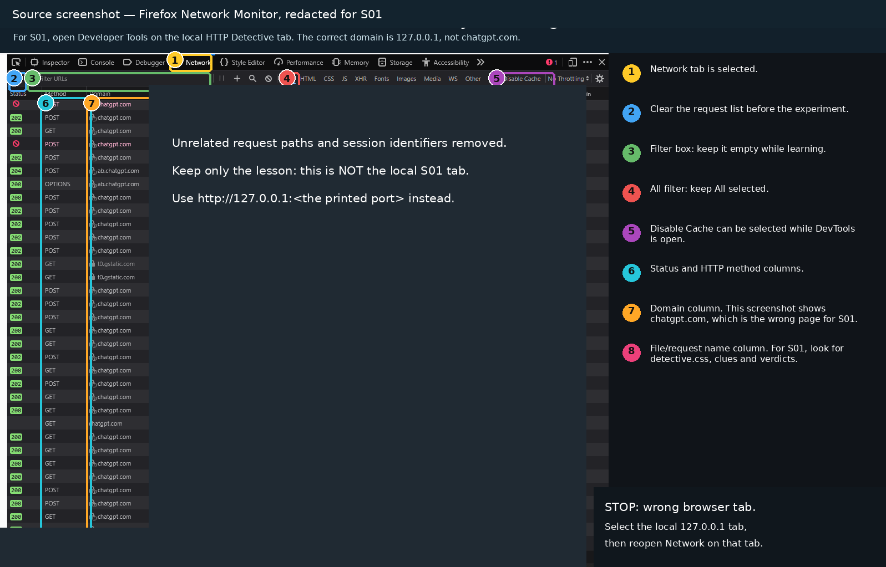
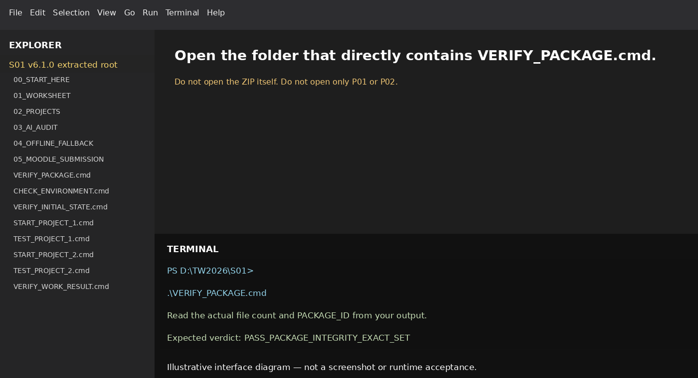
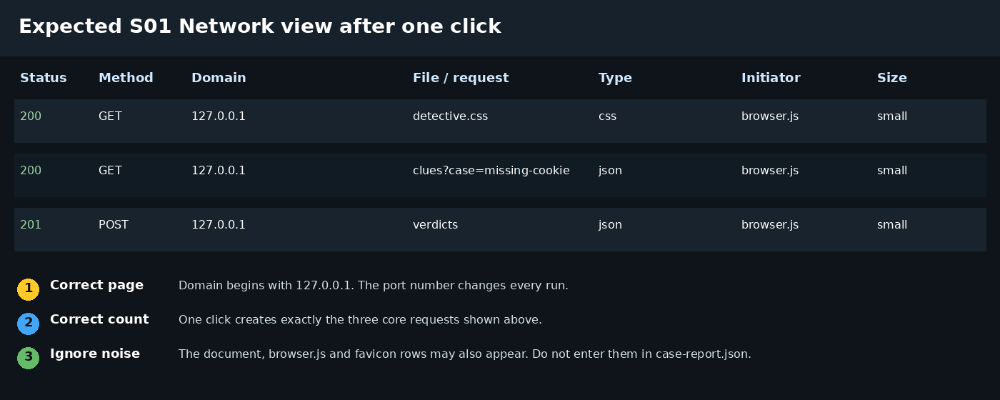

Seminar 1 — complete click-by-click guide
This guide assumes no prior experience with VS Code, terminals, Developer Tools, Network requests, Gemini or Moodle submission.
English (British)Windows-firstChrome, Edge and FirefoxOffline guideProgress saved locallyv6.1.1 RC1 · content and packaging only. Exact runtime, native platforms, native browsers, Microsoft Word and Moodle-live acceptance remain separate gates.
1. Read this first
Worked example of the wrong browser tab
The supplied redacted example uses Firefox Developer Tools while viewing chatgpt.com. The traffic belongs to that public tab. For S01, select the local loopback tab before opening Network. This screenshot is supplied teaching material, not your execution evidence.

Non-negotiable rules
- Do not work from inside the ZIP file.
- Do not run
npm install. The S01 projects have no external dependencies. - Use Node.js v24.21.0 and npm 11.19.0.
- In P01, modify only
02_PROJECTS/P01_HTTP_DETECTIVE/case-report.json. - In P02, modify only
02_PROJECTS/P02_TINY_HTTP_SERVER/src/application-handler.js. - A timeout, crash or frozen process is not an expected pedagogical failure.
- Gemini is a reviewer, not evidence. Verify its claims with tests or HTTP observations.
Where am I?
The extracted S01 root contains 00_START_HERE, 02_PROJECTS, 05_MOODLE_SUBMISSION and VERIFY_PACKAGE. GitHub source browsing and a ZIP window are not the running application.
What you should see
An intact kit, two distinct editable files and a separate evidence form. Keep all exports outside the kit.
Why this step matters
A plausible page, a downloaded CSS file and a green test counter are different observations. Your report must identify which measurement supports each claim.
Memorable check: A green light is only useful when the sensor is connected. A green result from the wrong file is still the wrong experiment.
2. Prepare the computer before the 60-minute activity
Required
- Node.js v24.21.0
- npm 11.19.0
- Visual Studio Code Stable
- Chrome, Edge or Firefox
- Access to gemini.google.com
- The extracted S01 student ZIP
Not required in S01
- Postman
- Vite or React
- SQLite
- Docker
- XAMPP or WAMP
- Any global npm package
Extract the ZIP to a short local path
- Open File Explorer and choose a writable local folder.
- Use your user folder, for example C:\Users\YOUR_NAME\TW2026\S01. A D: drive is optional.
- Create a fresh S01 folder and right-click the student ZIP, then choose Extract All….
- Choose the fresh folder as the destination and click Extract.
- Open the nested package root containing VERIFY_PACKAGE.cmd. If a course-wide download contains nested ZIPs, extract the S01 ZIP as well.
- Avoid merging versions. If your user folder is redirected to OneDrive or a managed location, choose an institutionally permitted writable local folder.
VERIFY_PACKAGE.cmd, CHECK_ENVIRONMENT.cmd and START_PROJECT_1.cmd.macOS/Linux route: extract using Finder or the archive manager into ~/TW2026/S01, then open the nested package root. Do not merge versions. Save personal evidence outside the package so the exact-set verifier does not reject it as an extra file.
- WHERE YOU ARE
- File Explorer or archive manager
- WHAT TO FIND
- The complete student ZIP
- EXACT ACTION
- Extract into a new short directory
- WHAT YOU SHOULD SEE
- A normal folder containing the root launchers
- WHAT TO RECORD
- Extraction path and version
- DO NOT CONTINUE UNLESS
- The ZIP is closed and the root is complete
- IF YOU DO NOT SEE THIS
- Repeat extraction into a new directory; preserve personal work
- STOP CONDITION
- The package is incomplete or still compressed
- CONTINUE WITH
- Step 2: Identify the browser before following menu instructions
Identify the browser before following menu instructions
Chrome normally has three vertical dots in the top-right corner. The menu path is More tools → Developer tools.
Edge normally has three horizontal dots in the top-right corner. The menu path is More tools → Developer tools.
Firefox normally has a three-line hamburger menu. The menu path is More tools → Web Developer Tools. The redacted source screenshot shows Firefox.
- WHERE YOU ARE
- Your selected local browser
- WHAT TO FIND
- Its top-right menu
- EXACT ACTION
- Identify Chrome, Edge or Firefox before using the matching tab below
- WHAT YOU SHOULD SEE
- The correct browser-specific instructions
- WHAT TO RECORD
- Browser name and version
- DO NOT CONTINUE UNLESS
- Browser and instructions match
- IF YOU DO NOT SEE THIS
- Switch the guide selector; do not rename a Firefox screenshot
- STOP CONDITION
- Browser is unknown or institutionally restricted
- CONTINUE WITH
- Step 3: Open VS Code and select the correct folder
3. Open the kit in Visual Studio Code

Open VS Code and select the correct folder
- Click the Windows Start button.
- Type Visual Studio Code.
- Click Visual Studio Code.
- Wait until the Welcome window appears.
- Click File in the top-left menu.
- Click Open Folder….
- Open
D:, thenTW2026, thenS01. - Select the folder that directly contains
VERIFY_PACKAGE.cmd. - Click Select Folder.
- If Workspace Trust appears, verify the source and location first. Trust only this authorised teaching kit. A restricted workspace blocks terminal execution; do not bypass an institutional warning.
VERIFY_PACKAGE.cmd, CHECK_ENVIRONMENT.cmd, VERIFY_INITIAL_STATE.cmd, START_PROJECT_1.cmd and the numbered folders.P01_HTTP_DETECTIVE or only P02_TINY_HTTP_SERVER as the root.macOS: open VS Code from Applications, then File > Open Folder. Linux: open VS Code from the application menu, then File > Open Folder. Select the extracted S01 root, not an individual project.
- WHERE YOU ARE
- VS Code Welcome or File menu
- WHAT TO FIND
- File > Open Folder
- EXACT ACTION
- Select the extracted kit root
- WHAT YOU SHOULD SEE
- All numbered directories in Explorer
- WHAT TO RECORD
- Root folder confirmation
- DO NOT CONTINUE UNLESS
- VERIFY_PACKAGE is visible
- IF YOU DO NOT SEE THIS
- Close the wrong folder and reopen the correct root
- STOP CONDITION
- Only a project subfolder or one file is open
- CONTINUE WITH
- Step 4: Open the integrated terminal
Open the integrated terminal
- Look at the VS Code top menu.
- Click Terminal.
- Click New Terminal.
- A panel opens at the bottom.
- Click after the terminal prompt.
- WHERE YOU ARE
- VS Code with the kit root open
- WHAT TO FIND
- Terminal > New Terminal
- EXACT ACTION
- Open one integrated terminal
- WHAT YOU SHOULD SEE
- A prompt in the kit root
- WHAT TO RECORD
- Shell and root confirmation
- DO NOT CONTINUE UNLESS
- The prompt uses the correct root
- IF YOU DO NOT SEE THIS
- Open the root via Explorer context menu; inspect Workspace Trust
- STOP CONDITION
- Institutional policy blocks execution
- CONTINUE WITH
- Step 5: Verify package integrity
4. Verify the package, runtime and initial state
Verify package integrity
Windows / PowerShell — paste once, then press Enter:
macOS / Linux — paste once, then press Enter:
bash VERIFY_PACKAGE.sh
Paste the command into the VS Code terminal and press Enter once.
"verdict": "PASS_PACKAGE_INTEGRITY_EXACT_SET"Read the actual PACKAGE_ID and file count. Do not expect a number copied from an illustration.
- WHERE YOU ARE
- Root terminal
- WHAT TO FIND
- VERIFY_PACKAGE launcher
- EXACT ACTION
- Paste the platform command and press Enter once
- WHAT YOU SHOULD SEE
- PASS_PACKAGE_INTEGRITY_EXACT_SET plus PACKAGE_ID
- WHAT TO RECORD
- Exact verdict and PACKAGE_ID
- DO NOT CONTINUE UNLESS
- No extra, missing, modified or unsafe entries
- IF YOU DO NOT SEE THIS
- Use a separate clean extraction; keep evidence outside it
- STOP CONDITION
- Any integrity failure
- CONTINUE WITH
- Step 6: Check Node.js and npm
Check Node.js and npm
Windows / PowerShell — paste once, then press Enter:
macOS / Linux — paste once, then press Enter:
bash CHECK_ENVIRONMENT.sh
STOP_RUNTIME_MISMATCH.- WHERE YOU ARE
- Root terminal
- WHAT TO FIND
- CHECK_ENVIRONMENT launcher
- EXACT ACTION
- Run the environment checker once
- WHAT YOU SHOULD SEE
- EXACT_RUNTIME_MATCH only on the required versions
- WHAT TO RECORD
- Observed Node, npm and tool paths
- DO NOT CONTINUE UNLESS
- Both required versions match
- IF YOU DO NOT SEE THIS
- Record mismatch and use the teacher-approved environment route
- STOP CONDITION
- Runtime missing or mismatched
- CONTINUE WITH
- Step 7: Confirm the documented starting state
Confirm the documented starting state
Windows / PowerShell — paste once, then press Enter:
macOS / Linux — paste once, then press Enter:
bash VERIFY_INITIAL_STATE.sh
P1 objective: exit 1, exactly 1 assertion failure
P1 regression: exit 0, 0 assertion failures
P2 baseline: exit 0, 0 assertion failures
P2 objective: exit 1, exactly 2 assertion failures
P2 regression: exit 0, 0 assertion failures
VERDICT PASS_INITIAL_STATE- WHERE YOU ARE
- Root terminal before editing
- WHAT TO FIND
- VERIFY_INITIAL_STATE
- EXACT ACTION
- Run the initial contract once
- WHAT YOU SHOULD SEE
- P01 1 and P02 2 named objective assertions only
- WHAT TO RECORD
- Six suite summaries and runtime label
- DO NOT CONTINUE UNLESS
- No parse, crash, signal, timeout or unexpected test name
- IF YOU DO NOT SEE THIS
- Re-extract protected files; investigate exact diagnostic
- STOP CONDITION
- Any infrastructure failure
- CONTINUE WITH
- Step 8: Start the local HTTP Detective server
5. Project 1 — HTTP Detective
Start the local HTTP Detective server
Windows / PowerShell — paste once, then press Enter:
macOS / Linux — paste once, then press Enter:
bash START_PROJECT_1.sh
Press Enter. Keep this terminal running.
- WHERE YOU ARE
- Root terminal
- WHAT TO FIND
- START_PROJECT_1
- EXACT ACTION
- Start one owned P01 session
- WHAT YOU SHOULD SEE
- S01 P1 LOOPBACK_URL with assigned port
- WHAT TO RECORD
- Actual loopback URL
- DO NOT CONTINUE UNLESS
- The server remains running
- IF YOU DO NOT SEE THIS
- Within 60 seconds switch to labelled supplied traces if blocked
- STOP CONDITION
- No URL or a duplicate session
- CONTINUE WITH
- Step 9: Open the correct local page
Open the correct local page
- Find the complete
http://127.0.0.1:...URL printed by the launcher. - Hold Ctrl on Windows/Linux or Cmd on macOS and click the URL in the VS Code terminal. This opens the link without stopping the server.
- Alternatively select the URL and use the platform copy shortcut: Linux Ctrl+Shift+C; macOS Cmd+C; Windows Ctrl+C with a text selection. Do not press Ctrl+C with no selection in a running server terminal.
- For manual navigation, open a new browser tab, paste the URL into the address bar and press Enter.
- WHERE YOU ARE
- VS Code terminal and browser
- WHAT TO FIND
- The printed local URL
- EXACT ACTION
- Open that URL without sending Ctrl+C to the server
- WHAT YOU SHOULD SEE
- HTTP Detective on 127.0.0.1
- WHAT TO RECORD
- Correct-tab evidence
- DO NOT CONTINUE UNLESS
- The address is local and title is correct
- IF YOU DO NOT SEE THIS
- Reopen the actual printed port
- STOP CONDITION
- Traffic belongs to ChatGPT, Gemini or Moodle
- CONTINUE WITH
- Step 10: Configure Network before clicking the page button
6. Open Developer Tools and the Network panel
Google Chrome — mouse route
- Make sure the active tab is the local
127.0.0.1HTTP Detective page. - Look at the top-right corner of Chrome.
- Click the button with three vertical dots.
- Move to or click More tools.
- Click Developer tools.
- In Developer Tools, click Network.
- If Network is hidden, click the double-chevron » at the end of the tool tabs and choose Network.
Keyboard fallback: F12 or Ctrl+Shift+I.
Microsoft Edge — mouse route
- Make sure the active tab is the local
127.0.0.1page. - Click the three horizontal dots in the top-right corner.
- Click More tools.
- Click Developer tools.
- In DevTools, click Network.
- If Network is hidden, click the + or More tools button on the Activity Bar and select Network.
Keyboard fallback: F12 or Ctrl+Shift+I.
Mozilla Firefox — mouse route
- Make sure the active tab is the local
127.0.0.1page. - Click the three-line hamburger menu in the top-right corner.
- Click More tools.
- Click Web Developer Tools.
- Click the Network tab in the Developer Tools toolbar.
Direct Network shortcut: Ctrl+Shift+E. General toolbox shortcut: Ctrl+Shift+I.
Configure Network before clicking the page button
- Confirm the Network panel is visible.
- Confirm recording is active. In Chrome/Edge, the record circle is red. Firefox starts monitoring when the tool opens.
- Click the clear button once. It is usually a crossed circle or bin icon in the top-left of the Network tool.
- Delete any text from the filter box.
- Select All, not only Fetch/XHR, because the experiment also loads CSS.
- Select Disable cache if the option is visible.
- Leave Preserve log unticked.
- WHERE YOU ARE
- DevTools on the local P01 tab
- WHAT TO FIND
- Network, clear control and filter
- EXACT ACTION
- Clear the log and select All
- WHAT YOU SHOULD SEE
- An empty, recording request table
- WHAT TO RECORD
- Network context
- DO NOT CONTINUE UNLESS
- Recording active and filter empty
- IF YOU DO NOT SEE THIS
- Reopen tools on the local tab and clear once
- STOP CONDITION
- Wrong tab or recording disabled
- CONTINUE WITH
- Step 11: Generate the three core requests
Generate the three core requests
- Without closing Developer Tools, click the page area.
- Click Run investigation exactly once.
- Wait one or two seconds.
- Return to the Network panel.
detective.css, clues?case=missing-cookie and verdicts.chatgpt.com in the Domain column, you opened Developer Tools on the wrong tab.- WHERE YOU ARE
- P01 local page
- WHAT TO FIND
- Run investigation
- EXACT ACTION
- Click exactly once
- WHAT YOU SHOULD SEE
- Three core exchanges and page output
- WHAT TO RECORD
- Observed methods and request count
- DO NOT CONTINUE UNLESS
- Records come from this click
- IF YOU DO NOT SEE THIS
- Clear and repeat once if duplicated; mark the repeat
- STOP CONDITION
- Unrelated-domain requests
- CONTINUE WITH
- Step 12: Request 1: detective.css

7. Inspect the three requests and complete case-report.json
Request 1: detective.css
- Click the row named
detective.css. - Click Headers in the request details.
- Under General, read Request Method, Request URL and Status Code.
- Under Response Headers, find
content-type. - Click Response and confirm the body is CSS text.
Reveal supplied comparison table — after your observation
| Field | Value to record |
|---|---|
| method | GET |
| pathname | /assets/detective.css |
| query | {} |
| requestMediaType | null |
| status | 200 |
| responseMediaType | text/css |
| bodyRepresentation | text |
Mechanism check: fetching CSS as text is not the same as applying it as a stylesheet. Record the response and inspect the page before claiming a visual change. A 200 status proves only this successful exchange.
- WHERE YOU ARE
- Network request details
- WHAT TO FIND
- detective.css
- EXACT ACTION
- Read headers and response separately
- WHAT YOU SHOULD SEE
- 200 text/css with text representation
- WHAT TO RECORD
- CSS exchange and visual-state limit
- DO NOT CONTINUE UNLESS
- Request and response fields are distinguished
- IF YOU DO NOT SEE THIS
- Reopen the specific row
- STOP CONDITION
- A 200 is being claimed as stylesheet application
- CONTINUE WITH
- Step 13: Request 2: clues?case=missing-cookie
Request 2: clues?case=missing-cookie
- Click the row containing
clues?case=missing-cookie. - Open Headers.
- Read GET and status 200 under General.
- Find Query String Parameters and read
case = missing-cookie. - Find
x-case-idunder Response Headers. - Open Response and confirm the body is JSON.
Reveal supplied comparison table — after your observation
| Field | Value |
|---|---|
| method | GET |
| pathname | /api/clues |
| query | {"case":"missing-cookie"} |
| requestMediaType | null |
| status | 200 |
| responseMediaType | application/json |
| bodyRepresentation | json |
| xCaseId | missing-cookie |
- WHERE YOU ARE
- Network request details
- WHAT TO FIND
- clues?case=missing-cookie
- EXACT ACTION
- Inspect query and response header x-case-id
- WHAT YOU SHOULD SEE
- 200 JSON for missing-cookie
- WHAT TO RECORD
- Query and selected header
- DO NOT CONTINUE UNLESS
- The query is not confused with a POST body
- IF YOU DO NOT SEE THIS
- Inspect URL parameters and response headers
- STOP CONDITION
- Evidence copied from a different request
- CONTINUE WITH
- Step 14: Request 3: verdicts
Request 3: verdicts
- Click the row named
verdicts. - Open Headers.
- Read POST and status 201 under General.
- Under Request Headers, find
content-type: application/json. - Open Payload or Request Payload and inspect the submitted JSON.
- Under Response Headers, find
location. - Open Response and confirm the body is JSON.
Reveal supplied comparison table — after your observation
| Field | Value |
|---|---|
| method | POST |
| pathname | /api/verdicts |
| query | {} |
| requestMediaType | application/json |
| status | 201 |
| responseMediaType | application/json |
| bodyRepresentation | json |
| location | /api/verdicts/verdict-1 |
Write your investigation report
- Return to VS Code without stopping the server yet.
- In Explorer, expand
02_PROJECTS > P01_HTTP_DETECTIVE. - Open
case-report.json. - Replace each TODO and null status from your own three observations. Use JSON
nullfor an absent request media type, not the string"null". - Save with Ctrl+S on Windows/Linux or Cmd+S on macOS.
- Do not add report keys, change tests or create another file inside the kit.
- WHERE YOU ARE
- Network then VS Code
- WHAT TO FIND
- verdicts and case-report.json
- EXACT ACTION
- Record POST headers/body/Location, then save your JSON report
- WHAT YOU SHOULD SEE
- 201 and the Location response header
- WHAT TO RECORD
- Report and actual observation
- DO NOT CONTINUE UNLESS
- Only case-report.json changed
- IF YOU DO NOT SEE THIS
- Fix JSON syntax or missing keys from observations
- STOP CONDITION
- Tests or infrastructure were edited
- CONTINUE WITH
- Step 15: Stop the P01 server and run the P01 tests
Reveal the complete correct P01 case-report.json only after attempting the observation
Stop the P01 server and run the P01 tests
- Click inside the terminal that runs the server.
- Press Ctrl+C once.
- Wait until the normal PowerShell prompt returns.
- Run the command below.
Windows / PowerShell — paste once, then press Enter:
macOS / Linux — paste once, then press Enter:
bash TEST_PROJECT_1.sh
- WHERE YOU ARE
- Owned P01 terminal then root
- WHAT TO FIND
- Ctrl+C and TEST_PROJECT_1
- EXACT ACTION
- Stop the owned session and test the changed report
- WHAT YOU SHOULD SEE
- All eight P01 tests pass in complete mode
- WHAT TO RECORD
- P01 test report
- DO NOT CONTINUE UNLESS
- Complete mode, not initial mode
- IF YOU DO NOT SEE THIS
- Compare null, numbers, media types and exact fields
- STOP CONDITION
- Unexpected failure or residual owned session
- CONTINUE WITH
- Step 16: Open the only permitted P02 file
8. Project 2 — Tiny HTTP Server
Open the only permitted P02 file
- In the VS Code Explorer, expand
02_PROJECTS. - Expand
P02_TINY_HTTP_SERVER. - Expand
src. - Click
application-handler.js. - Find the comment beginning
// TODO:.
- WHERE YOU ARE
- VS Code Explorer
- WHAT TO FIND
- P02 src/application-handler.js
- EXACT ACTION
- Open the single permitted implementation file
- WHAT YOU SHOULD SEE
- Existing query route and TODO branch
- WHAT TO RECORD
- P02 predicted cases and edit path
- DO NOT CONTINUE UNLESS
- Predictions saved before the implementation
- IF YOU DO NOT SEE THIS
- Return to correct file and restore protected sources
- STOP CONDITION
- Wrong file or unsupported contract expansion
- CONTINUE WITH
- Step 17: Implement the path-based greeting route
Implement the path-based greeting route
Record your prediction before editing. Write the path-greeting branch yourself inside the existing TODO area. Keep GET as the accepted method and reject extra path segments through the supplied fallback.
Reason through four operations: isolate the final segment, decode percent-encoded characters, trim whitespace, and decide whether the resulting name is empty.
Use the response contract in P02_GUIDE.md. Ordinary names, names with spaces and Unicode names must depend on the input. Preserve the existing query and echo routes.
Use the named objective failure as feedback. If blocked, record the actual state and ask for a contract hint; do not edit protected tests or copy a reference implementation into the evidence form.
- WHERE YOU ARE
- P02 implementation file
- WHAT TO FIND
- Prefix/TODO branch
- EXACT ACTION
- Use the contract and named failure to guide your own implementation.
- WHAT YOU SHOULD SEE
- Use the contract and named failure to guide your own implementation.
- WHAT TO RECORD
- Own diff and mechanism
- DO NOT CONTINUE UNLESS
- The fallback remains intact
- IF YOU DO NOT SEE THIS
- Use the contract and named failure to guide your own implementation.
- STOP CONDITION
- Tests edited or private solution claimed as own evidence
- CONTINUE WITH
- Step 18: Run the P02 tests
Run the P02 tests
Windows / PowerShell — paste once, then press Enter:
macOS / Linux — paste once, then press Enter:
bash TEST_PROJECT_2.sh
- WHERE YOU ARE
- Root terminal
- WHAT TO FIND
- TEST_PROJECT_2
- EXACT ACTION
- Run the P02 contract
- WHAT YOU SHOULD SEE
- Eight tests pass in complete mode
- WHAT TO RECORD
- Bounded TAP report
- DO NOT CONTINUE UNLESS
- Complete mode with no unexpected failures
- IF YOU DO NOT SEE THIS
- Inspect the named failure without weakening tests
- STOP CONDITION
- Parse error, hang or signal
- CONTINUE WITH
- Step 19: Start P02 and make manual HTTP checks
Start P02 and make manual HTTP checks
In the package-root terminal start P02. Keep that terminal running. Open a second terminal using Terminal > New Terminal.
.\START_PROJECT_2.cmd
$BASE = "http://127.0.0.1:REPLACE_WITH_THE_PRINTED_PORT"
curl.exe -i "$BASE/api/greetings/Ada" curl.exe -i "$BASE/api/greetings/Ada%20Lovelace" curl.exe -i "$BASE/api/greetings/%20%20" curl.exe -i "$BASE/api/greetings/Ada/extra"
bash START_PROJECT_2.sh
BASE="http://127.0.0.1:REPLACE_WITH_THE_PRINTED_PORT"
curl -i "$BASE/api/greetings/Ada" curl -i "$BASE/api/greetings/Ada%20Lovelace" curl -i "$BASE/api/greetings/%20%20" curl -i "$BASE/api/greetings/Ada/extra"
Replace the port placeholder before pressing Enter. Run each probe separately. Expected: Ada → 200 and message/source; encoded space → 200 with decoded name; blank name → 400/name_required; extra segment → 404/not_found.
If curl is unavailable, paste each GET URL separately into the local browser tab and inspect its Network response. This is a different client, not an identical curl run. Record that limitation.
- WHERE YOU ARE
- P02 server and second terminal
- WHAT TO FIND
- Printed URL and four probes
- EXACT ACTION
- Send one GET probe at a time
- WHAT YOU SHOULD SEE
- 200, 200, 400 and 404 respectively
- WHAT TO RECORD
- Request/response evidence
- DO NOT CONTINUE UNLESS
- The client and actual port are recorded
- IF YOU DO NOT SEE THIS
- Use browser GET probes if curl is absent, labelling the client
- STOP CONDITION
- Placeholder port used or foreign host
- CONTINUE WITH
- Step 20: Verify the complete work result
Verify the complete work result
Windows / PowerShell — paste once, then press Enter:
macOS / Linux — paste once, then press Enter:
bash VERIFY_WORK_RESULT.sh
- WHERE YOU ARE
- Root terminal
- WHAT TO FIND
- VERIFY_WORK_RESULT
- EXACT ACTION
- Run the complete boundary and test check
- WHAT YOU SHOULD SEE
- PASS_WORK_RESULT
- WHAT TO RECORD
- Final test summary and limitation
- DO NOT CONTINUE UNLESS
- Only the two permitted files differ
- IF YOU DO NOT SEE THIS
- Investigate reported protected-file changes
- STOP CONDITION
- Any false or incomplete PASS claim
- CONTINUE WITH
- Step 21: Open a new Gemini chat
9. Perform the Gemini audit click by click
Open a new Gemini chat
- Open a new browser tab.
- Click the address bar.
- Type
gemini.google.com. - Press Enter.
- Sign in only with the account permitted for the course, if required.
- Click New chat in the top-left area. If it is hidden, open the menu first.
- WHERE YOU ARE
- New browser tab
- WHAT TO FIND
- gemini.google.com
- EXACT ACTION
- Open a new permitted chat
- WHAT YOU SHOULD SEE
- An empty prompt area
- WHAT TO RECORD
- AI source/provenance
- DO NOT CONTINUE UNLESS
- No private data in prompt or screenshot
- IF YOU DO NOT SEE THIS
- Use labelled synthetic practice if unavailable
- STOP CONDITION
- Credentials or unauthorised code would be sent
- CONTINUE WITH
- Step 22: Paste the complete audit prompt
Paste the complete audit prompt
Use the copy button. Read the prompt once before sending it.
- Click inside the Gemini prompt box.
- Press Ctrl+V.
- Check that the complete flawed patch is present.
- Click the Send arrow once.
- Wait for the response to finish.
- WHERE YOU ARE
- Gemini prompt box
- WHAT TO FIND
- Bounded greetings-route prompt
- EXACT ACTION
- Read, paste and send once
- WHAT YOU SHOULD SEE
- One response about the supplied flawed patch
- WHAT TO RECORD
- Prompt and selected claim
- DO NOT CONTINUE UNLESS
- You did not request the whole assessed module
- IF YOU DO NOT SEE THIS
- Remove sensitive content before sending
- STOP CONDITION
- No permission for the account or data
- CONTINUE WITH
- Step 23: Verify the Gemini response instead of copying it
Verify the Gemini response instead of copying it
At minimum, the audit should detect that the flawed patch:
- uses
includes()instead of a precise prefix contract - hides extra path segments through
split('/').pop() - does not call
decodeURIComponent() - does not trim the decoded name
- returns 200 for an empty name
- uses the wrong response key
greeting - omits
source: 'path'
Record the verdict, evidence and limitation in the S01 form.
Run node 03_AI_AUDIT/flawed-patch-witness.mjs from the package root. Record two actual mismatches from the isolated flawed function and explain them. This is function execution, not a browser HTTP exchange. If execution is blocked, use a labelled static trace as described in 03_AI_AUDIT/WITNESS_GUIDE_EN_GB.md.
- WHERE YOU ARE
- Form and independent evidence
- WHAT TO FIND
- One Gemini claim
- EXACT ACTION
- Test at least two counterexamples independently
- WHAT YOU SHOULD SEE
- A justified verdict and correction
- WHAT TO RECORD
- Claim, check, verdict and limit
- DO NOT CONTINUE UNLESS
- Model text is not the sole evidence
- IF YOU DO NOT SEE THIS
- Use encoded spaces and extra segment witnesses
- STOP CONDITION
- Synthetic text mislabelled as real Gemini
- CONTINUE WITH
- Step 24: Open the form
10. Complete the English form, export PDF and submit to Moodle
05_MOODLE_SUBMISSION/FORM_S01_EN_GB.html. Open it from the kit root with OPEN_MOODLE_FORM.cmd on Windows or bash OPEN_MOODLE_FORM.sh on macOS/Linux.Open the form
From the student kit root, run:
Windows / PowerShell — paste once, then press Enter:
macOS / Linux — paste once, then press Enter:
bash OPEN_MOODLE_FORM.sh
The launcher opens the integrated English-only form. Do not use a Romanian form for the EN-GB groups.
- WHERE YOU ARE
- Package root
- WHAT TO FIND
- OPEN_MOODLE_FORM
- EXACT ACTION
- Open FORM_S01_EN_GB.html
- WHAT YOU SHOULD SEE
- Single EN-GB form v6.1.1
- WHAT TO RECORD
- Form version
- DO NOT CONTINUE UNLESS
- Correct current form
- IF YOU DO NOT SEE THIS
- Open the known file directly if launcher fails
- STOP CONDITION
- Legacy FORMULAR alias
- CONTINUE WITH
- Step 25: Validate and export the form
Validate and export the form
- Complete every required field in English.
- Click Validate form.
- Complete any field marked in red.
- Click Export / print PDF.
- Choose Save as PDF.
- Use A4 paper and default or fit-to-page scale.
- Save the file with the exact convention below.
Example: TW2026_S01_1042_Popescu_Ana.pdf.
Long evidence: the print view materialises every field as paginable text. Before upload, find your last paragraph in the PDF. Any material edit or JSON import clears the declaration; read and confirm it again. Local validation checks completeness, not truth.
If storage is unavailable, export the JSON draft outside this kit or use the DOCX form. A synthetic/offline AI example must be labelled as such and cannot stand in for a real Gemini interaction.
- WHERE YOU ARE
- Offline form
- WHAT TO FIND
- Validate, declaration and PDF control
- EXACT ACTION
- Validate, reconfirm declaration, then print
- WHAT YOU SHOULD SEE
- Full paginated text and correct filename
- WHAT TO RECORD
- PDF preflight; last paragraph survives
- DO NOT CONTINUE UNLESS
- Every field is present and no sensitive data remains
- IF YOU DO NOT SEE THIS
- Export JSON or DOCX fallback; recheck long field
- STOP CONDITION
- Truncated text, stale declaration or wrong filename
- CONTINUE WITH
- Step 26: Upload the PDF to online.ase.ro
Upload the PDF to online.ase.ro
- Open
online.ase.ro. - Sign in.
- Open the Web Technologies course.
- Open the Week 1 section.
- Click the S01 Assignment.
- Confirm that the Assignment title contains S01.
- Click Add submission.
- Click the file area or drag the PDF into it.
- Wait until the exact filename appears.
- Click Save changes.
- Return to the Assignment page.
- If Submit assignment appears, click it and confirm.
- Verify the submission status, filename and timestamp.
Moodle labels vary by institutional version and language. This route is generic documentation, not an inspected online.ase.ro configuration. If the title or final-submit behaviour differs, stop and ask the teacher. No deadline is invented here.
- WHERE YOU ARE
- Correct Moodle Assignment
- WHAT TO FIND
- Add submission and final status
- EXACT ACTION
- Upload one PDF and verify the final status
- WHAT YOU SHOULD SEE
- Filename, timestamp and non-draft status where applicable
- WHAT TO RECORD
- Post-submission status outside the original evidence claim
- DO NOT CONTINUE UNLESS
- Right course/week/title and final action complete
- IF YOU DO NOT SEE THIS
- Reopen Assignment or ask teacher on UI differences
- STOP CONDITION
- Draft, wrong file or sensitive data
- CONTINUE WITH
- Keep the private PDF and the observed submission receipt.
11. The 60 minute core and independent work
Predict
Open P01
Network
Bridge
P02
Verify
Gemini
Exit
| Phase | Purpose |
|---|---|
| Before class | Extract and check the environment if available. Reading the guide requires only a browser. Preserve blockers honestly. |
| Core 0 to 6 minutes | Save predictions for P01 and P02 before observing the result. |
| Core 6 to 28 minutes | Start P01, inspect the three exchanges, explain query versus body versus headers and attempt the report. |
| Core 28 to 49 minutes | Attempt the P02 path greeting and use the named tests as feedback. |
| Core 49 to 58 minutes | Record actual test status. Select two counterexamples to the supplied flawed claim; run the isolated witness if time permits. |
| Core 58 to 60 minutes | Save the truthful state and stop owned servers. Record one supported claim and one limitation. |
| Independent work after class | Resolve incomplete tasks, audit a real or labelled synthetic AI claim, complete the compact form, inspect the PDF and follow the published Moodle deadline. |
.\STOP_SERVERS.cmd .\STATUS_SERVERS.cmd
bash STOP_SERVERS.sh bash STATUS_SERVERS.sh
Expected: PASS_OWNED_SESSION_CLEANUP, then NO_OWNED_SESSION for both projects. A stale or unreachable control record is STOP_SESSION_RECONCILIATION; do not kill unrelated Node processes or guess a PID.
12. Troubleshooting wizard
Offline fallback when the local server cannot run
Open 04_OFFLINE_FALLBACK/HTTP_TRACES.html. Use the supplied traces for the P01 observation task. State clearly in the evidence form that the trace demonstrates the supplied example contract but does not prove that the local machine can run the server.
Official interface references
The guide is self-contained. These official pages are included for verification because browser interfaces can change.
- Chrome: Open DevTools
- Chrome: Network panel overview
- Microsoft Edge DevTools overview
- Microsoft Edge Network tool
- Firefox Developer Tools Toolbox
- Firefox Network Monitor
- Google Gemini web app
For HTTP media types, methods and URL parsing, read SOURCES_EN_GB.md in this folder. The student criteria and fallback policy are in ASSESSMENT_CRITERIA_EN_GB.md.